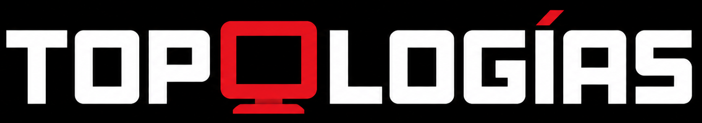

GearLab is a web-app to design and download STL, STEP or OBJ gears. Based on a parametric design, creativity is the limit.
Mechatronics and Cyber-Physical Systems Engineer focused on robotics, embedded systems, automation, and the development of integrated prototypes that connect hardware, software, sensors, and cloud technologies.

About me
timeline

Capa8 is a web-app to generate network topology diagrams. Based on the most common nodes of each OSI layer.